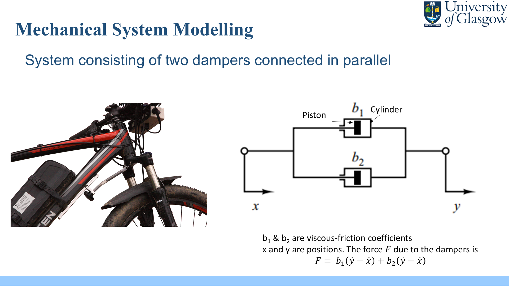
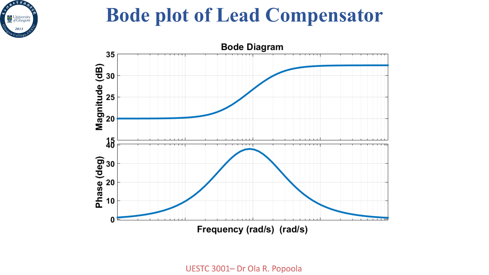

这套分站参考 `PowerElectronics.md` 的课程站组织方式：先给总复习与题型地图，再按 Lecture 主题分组整理知识点， 最后用 tutorial 与往年题把解题套路压实。
总览
这门课最核心的链条很稳定：建模 -> 传递函数 -> 闭环分析 -> 稳定性与稳态误差 -> 根轨迹 / Bode / Nyquist -> 补偿设计。
如果按考试来学，Q1 常落在系统建模、框图化简、设计流程与 Routh；Q2 是控制作用和一阶闭环；Q3 常考根轨迹或 Nyquist； Q4 几乎总要你画 Bode、算裕度、讨论稳定性。

目录
期末总复习
按 Q1-Q4 题型整理必背概念、常用公式、计算模板和复习顺序，适合考前最后一轮。
Lecture 1-3
动态系统概览、机械/电气建模、拉普拉斯、传递函数、开闭环与框图化简。
Lecture 4-6
极点零点、特征方程、Routh 稳定判据，以及 P / I / D / PI / PD / PID 的作用。
Lecture 7-10
根轨迹、频率响应、Nyquist、Bode 图和时间常数形式，是 Q3-Q4 的硬骨头。
Lecture 11-13
相位裕度、增益裕度、M/N 圆以及 lead、lag、lead-lag 补偿设计的直觉和流程。
Tutorial 与例题
收拢 tutorial、lecture worked examples 与典型 exam-style questions，给出题目与解题路线。
真题题型统计
基于 2022-2025 四套卷子，统计每道大题在考什么、怎么复习效率最高。
公式总结
把建模、稳态误差、根轨迹、Bode、Nyquist、裕度和补偿器公式压成一页速查。
复习路线
- 先看“期末总复习”，把 Q1-Q4 的题型与高频公式背熟。
- 再按 Lecture 1-6 打地基：传递函数、框图、稳定性、PID 作用。
- 接着做 Lecture 7-10：根轨迹、Nyquist、Bode，这一段决定大题能不能拿分。
- 最后刷 tutorial 与 exam paper，把“会看”变成“会写”。
Lecture 地图
| Lecture 组 | 核心内容 | 常见考法 |
|---|---|---|
| Lecture 1-3 | 系统建模、拉普拉斯、传递函数、框图、扰动输入 | 画 block diagram、框图化简、写闭环传递函数 |
| Lecture 4-6 | 极点零点、稳定性、Routh、P/I/D/PID | 稳态误差、阻尼比、解释控制作用、参数范围 |
| Lecture 7-10 | Root locus、Nyquist、Bode、延迟、时间常数形式 | 画图、求 breakaway、求虚轴交点、写频域近似 |
| Lecture 11-13 | PM、GM、M/N 圆、lead / lag / lead-lag | 算裕度、讨论稳定性、设计补偿器改善指标 |
速查
\[ T(s)=\frac{G(s)}{1+G(s)H(s)},\qquad \frac{E(s)}{R(s)}=\frac{1}{1+G(s)H(s)} \]
\[ T_s\approx\frac{4}{\zeta\omega_n},\quad M_p=e^{-\zeta\pi/\sqrt{1-\zeta^2}}\times100\% \]
\[ K_p=\lim_{s\to0}G(s),\quad K_v=\lim_{s\to0}sG(s),\quad K_a=\lim_{s\to0}s^2G(s) \]
\[ \mathrm{PM}=180^\circ+\angle L(j\omega_{gc}),\quad \mathrm{GM}_{dB}=-20\log_{10}|L(j\omega_{pc})| \]


素材来源
- `PPT/`：Lecture 1-13 课件。
- `tutorial/`：Tutorial 1、Tutorial 2、Lecture 8/9 练习与答案。
- `exam paper/`：2022-2025 exam paper。
- `总学习笔记_浓缩版.md`：这套分站的文字主骨架。